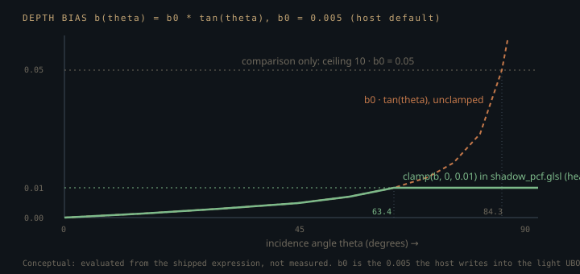

Monograph · Tree · ← Sitemap · Shadow includes
shaders
Shadow includes
CSM sampling, PCF, shadow types.
One header, and nothing includes it
`shaders/includes/shadow/` holds a single file, `shadow_pcf.glsl`: a per-light PCF sampler written against a single 2D shadow map. Grep the include directive across `shaders/` and it is named by no stage, and the CMake source glob compiles stages only, so the header is not even parsed by a shader build.
float calculateShadowForLightIndex(int lightIndex, vec3 worldPos, vec3 normal,shaders/includes/shadow/shadow_pcf.glsl:17The shadowing that runs lives elsewhere, written inline. `deferred_lighting.frag` samples a four-layer cascade array, selecting the cascade by positive view-space depth:
if (viewDepth < cascades.splitDepths[i]) return i;shaders/core/deferred_lighting.frag:105and its PCF taps accumulate *visibility* — 1.0 where the fragment is lit:
shadow += (projCoords.z - bias > pcfDepth) ? 0.0 : 1.0;shaders/core/deferred_lighting.frag:136The include that has to come last
`shadow_pcf.glsl` takes the shadow map as a parameter but not the lights. It reaches into a uniform block named `lighting` that the *calling* file must already have declared, under that exact name, with those exact members:
// IMPORTANT: Caller must define LightUBO named 'lighting' before including this file!shaders/includes/shadow/shadow_pcf.glsl:8GLSL has no forward declaration for an interface block, so this is a purely textual ordering constraint that the compiler reports only as an undefined identifier. Any adopter has to declare the block first and include the header below it; hoisting the includes to the top of the file — the reflex tidy-up — stops it compiling. It also needs `LIGHT_DIRECTIONAL` from `types.glsl` in scope, which it names in a comment rather than an include.
Passing the light data in as a parameter is what the same signature already does for `shadowMap`, and it was rejected here for a stated reason. The sampler takes an `int lightIndex`, never a `Light`, because — according to the header's own comment — copying the 128-byte struct (four `vec4`s plus a `mat4`) out of the UBO comes back corrupted on some drivers: {{cite shaders/includes/shadow/shadow_pcf.glsl "Some GPU drivers corrupt large struct copies (the 128-byte Light struct)"}} That comment is the only evidence in the tree — no driver named, no repro, no test — so read it as the author's recorded rationale rather than a reproduced finding. The shipping lighting pass does the opposite and copies a whole `Light` per loop iteration. The header follows its own rule regardless: every field is read by indexing the UBO directly, which is what forces the block to be visible by name, and the fragile include order is the price paid for it.
The first thing the function does with that index is read `params.z`, the shadow-map index the host writes, and return zero occlusion for any light whose value is negative — so a caller can invoke it once per light in its loop and let non-casters cost a single compare.
float shadowMapIndex = lighting.lights[lightIndex].params.z;shaders/includes/shadow/shadow_pcf.glsl:21Bias by the tangent of the incidence angle
A depth map records the occluder distance at texel centres. A receiver shaded anywhere else inside that texel is compared against a depth belonging to a point up to half a texel away, and on a surface tilted relative to the light that lateral offset turns into a depth error proportional to the surface slope. The constant subtracted before the comparison therefore has to grow with incidence angle:
Here $b_0$ is the host-supplied `shadowBias`, $N$ the shading normal, $L$ the unit direction from the surface to the light, and $\theta$ the incidence angle. The header computes it in exactly that form, through `acos` then `tan`, rather than the algebraically equal $\sqrt{1-c^2}/c$:
float bias = lighting.shadowBias * tan(acos(cosTheta));shaders/includes/shadow/shadow_pcf.glsl:58
The deferred cascade path does none of this. Its bias is the cascade UBO's `shadowBias`, a constant 0.012 subtracted at every incidence angle, and the `normalBias` beside it in the same struct is never read by the shader:
float shadowBias{0.012f};ohao/render/deferred/render_pass_base.hpp:172Occlusion here, visibility there
The header filters with a 5×5 grid at one-texel spacing — twenty-five taps, all weighted equally — and returns *occlusion*, pre-multiplied by the global strength:
return shadow * lighting.shadowStrength;shaders/includes/shadow/shadow_pcf.glsl:87const int pcfRadius = 2;shaders/includes/shadow/shadow_pcf.glsl:69A caller would consume it as `1 - shadow`, so with the host's strength of 0.7 a fully occluded fragment would keep 30 % of that light's direct contribution.
lightUbo.shadowStrength = 0.7f;ohao/gpu/vulkan/buffer_setup.cpp:67The cascade path returns the opposite quantity — visibility, 3×3 taps, no strength term — and multiplies it straight into the light's BRDF result. A shader that mixed the two samplers would compile cleanly and shade one of the two results inverted.
Lo += evaluateBRDF(surface, L, radiance) * shadow;shaders/core/deferred_lighting.frag:250Four cascades, one light type, resolved per pass
The depth-write side is a single vertex stage with no fragment shader: depth arrives straight from the rasteriser into one 2048² layer per cascade. Each cascade is its own render pass into its own array-layer view, so the vertex shader needs no layer routing — it takes that cascade's view-projection as a push constant, reads the object's world matrix from `RenderScene`'s instance table at `gl_InstanceIndex` (the draw's `firstInstance` is the instance slot), and projects directly:
gl_Position = pc.viewProj * instances[gl_InstanceIndex].world * vec4(inPosition, 1.0);shaders/shadow/shadow_csm.vert:29The push block is a single `mat4`, 64 bytes, half the push-constant size every Vulkan device guarantees, and the C++ mirror pins that size:
static_assert(sizeof(ShadowPushConstant) == 64);ohao/render/deferred/csm_pass.hpp:105On the consuming side, the cascade map shadows directional lights only — the `lightType == 0` test in the deferred loop — and only when flag bit 2 is set, which the host sets only when no RT shadow mask is bound:
} else if ((pc.flags & 4u) != 0u && lightType == 0) {shaders/core/deferred_lighting.frag:245That leaves the light UBO's own shadow fields with no reader. The light table still tags the first light whose kind is Point or Spot with `params.z = 0` — the legacy rule, kept as is, and in the engine's enum the first kind is a point light:
enum class LightKind : uint32_t { Point, Directional, Spot, AreaRect, EmissiveProxy };ohao/render/scene/render_scene_types.hpp:78So the host marks point-or-spot lights as casters and computes a `lightSpaceMatrix` for them — identity for a point light, since `lightSpaceMatrix` has no cube-map path — while the only shader that shadows anything ignores `params.z` and `lightSpaceMatrix` and shadows the directional lights instead. Only `shadow_pcf.glsl`, which nothing compiles, would read the tagged values.
// Point lights don't use a single matrix (need cube maps)ohao/render/scene/light_table.cpp:89Contracts
- `shadow_pcf.glsl` must be included *after* the caller declares a uniform block named `lighting` containing `lights[]`, `shadowBias` and `shadowStrength`, with `types.glsl` already in scope. Reordering the includes is a compile error, and renaming the block is a compile error in a file that does not mention it.
- The function must keep taking a light *index*. The header states that binding a `Light` to a local corrupts on some drivers, and the whole naming coupling above exists to avoid it; the claim is unreproduced in this tree, and the shipping deferred pass does not observe it.
- `ShadowPushConstant` and `shadow_csm.vert`'s push block must stay a single `mat4 viewProj` at 64 bytes; the C++ side is statically asserted, the GLSL side is not. The vertex shader's instance-table binding (set 0, binding 0) must stay in step with `CSMPass`'s scene layout.
- Cascade shadows apply to directional lights only, and RT shadows (bit 5) replace them outright. The host's `params.z` caster tag and per-light `lightSpaceMatrix` are read by no compiled shader.
Source files
shaders/includes/shadow/shadow_pcf.glslshaders/core/deferred_lighting.fragohao/render/deferred/render_pass_base.hppohao/gpu/vulkan/buffer_setup.cppshaders/shadow/shadow_csm.vertohao/render/deferred/csm_pass.hppohao/render/scene/render_scene_types.hppohao/render/scene/light_table.cppshaders/includes/shadow/shadow_csm.glslpath noteshaders/includes/shadow/shadow_types.glslpath noteshaders/shadow/shadow_depth.vertpath noteshaders/shadow/shadow_depth.fragpath noteParent hub for the full pipeline narrative; this page is the file-level design unit. Sitemap · hover glossary terms anywhere.